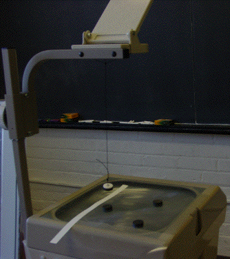

Pendulum Fractal Basin Boundary
Procedure
Tape a piece of string to a magnet so the magnet hangs approximately level from the string.
Attach the other end of the string to the overhead projector head (tape or a suction cup work well).

String pendulum
Return to
Procedure